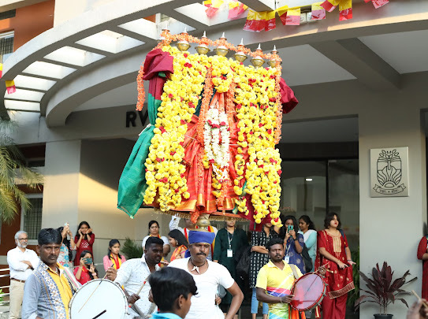

COURSES AVAILABLE
BBAB.Tech(Hons.)
B.sc.(Hons.)
B.Des
M.des
B.A.(Hons.)(Economics)
M.A (Economics)
B.L.A(Hons.)
B.A. LL.B.(Hons.)
LL.M.
EVENTS



The curriculum is built to provide a comprehensive understanding of the four pillars of Business Administration: Finance, Marketing, Entrepreneurship, and Business Analytics. Each of these pillars is offered to students to opt from as their major. However, in the spirit of providing freedom to the students, we do not limit a student to courses that they wish to major in. Additionally, we expose students to academic writings, digital literacy, and debates, which do not fall in the scheme of things in most of the schools across the nation.
BTech (Hon) Computer Science and Engineering Program at RV University offers students a firm foundation in computing and specialisation in cutting edge technologies. The courses also provides an opportunity for students for interdisciplinary learning by doing a minor in other schools at RVU, Latest teaching and learning methods have been incorporated in the course design to enable flipped learning, mastery learning and peer learning using modern world class facilities. The general core and electives of the program improve 21st century skills such as, communication skills, creativity and innovation, collaboration, Social awareness, self-awareness Critical thinking, Problem solving skills and others which are highly sought after by leading industries for placements. Our innovative assessment methods focus on learner analytics leading to individual target profiles for global careers. Our faculty have hands-on knowledge with industry and research experience and have degrees from premier universities in India and abroad. Our student clubs and plenty of extracurricular activities ensure memorable campus life.
BSc (Hons) Computer Science Program at RV University offers students a firm foundation in computing and specialisation in cutting edge technologies. The courses also provides an opportunity for students for interdisciplinary learning by doing a minor in other schools at RVU, Latest teaching and learning methods have been incorporated in the course design to enable flipped learning, mastery learning and peer learning using modern world class facilities. The general core and electives of the program improve 21st century skills such as, communication skills, creativity and innovation, collaboration, Social awareness, self-awareness Critical thinking, Problem solving skills and others which are highly sought after by leading industries for placements. Our innovative assessment methods focus on learner analytics leading to individual target profiles for global careers. Our faculty have hands-on knowledge with industry and research experience and have degrees from premier universities in India and abroad. Our student clubs and plenty of extracurricular activities ensure memorable campus life
The Bachelor of Design (B.Des.) is a degree programme of four-year duration offering Design Foundation in Year 1 and Specialisations in Product Design and Innovation, Designed Environments, Information and Graphic Design and User Experience Design in Years 2, 3 and 4.Highly qualified Faculty with tremendous academic and industry experience having qualifications from some of the best Design Schools of the world including NID, IDC (IIT Bombay) etc.High quality, affordable global design education .World-class infrastructure of studios, workshops, labs, prototyping and incubation facility Design pedagogy that facilitates integrative learning through a multidisciplinary process
The Master of Design (M.Des.) is a postgraduate degree programme of two-year duration offering specialisations on Communication Design and Interaction Design.Our Master of Design curriculum would emphasize on creating Product leaders, Design managers, Strategists, Team leaders, and Design Researchers. The M.Des course curriculum would offer a concentration in your chosen design specialization and few electives from the School of Liberal Arts & Sciences and the School of Economics & Finance. There would be individual and group projects at specialization as well as institute level.The Master of Design programme will help students approach topics by asking ‘why’ in order to stimulate creativity
In this programme, students will gain knowledge essential for comprehending the complex issues that shape today’s global marketplace. Our program also provides them with excellent preparation for graduate study in fields such as law, political science, history, criminal justice, anthropology, sociology, and economics. Plus, independent research opportunities abound through seminar courses, independent studies & internships.
The MA programme in Economics at RV University is envisaged in a way that builds a strong foundational understanding of Economics while at the same time preparing students to enter into professional careers in their chosen field among multiple fields of economics. The programme starts with Core Courses in Economics that builds the disciplinary foundations and provide students with a rigorous understanding of economic theories, principles and their applications. The Core Courses prepare students to think like an economist. On completion of core courses, students’ progress to choose their elective courses.
The B.L.A. (Hons.) courses prepare students for a science based future with the right blend of theory and practicals while equipping them with hands-on experience and latest information on their chosen field. It is a degree programme of three-year duration, where students can pursue their majors in environmental science, physics, psychology, literature and cultural studies, or filmmaking in Bangalore.
Five-year Integrated B. A. LL B. (Hons.): The combination of law and humanities seeks to provide a rounded understanding of the legal discipline. This multidisciplinary approach will help develop essential skills like critical-analysis, lateral thinking, research and writing, problem solving to name a few. Students will have the option to pursue their specific interests by opting for elective subjects of their choice. The combined knowledge humanities and law is highly valued by law firms, NGOs, think tanks, legal aid clinics, public prosecutors to name a few.
Master of Laws (LL.M.): The LL.M. seeks to provide students with a specialised understanding of the law. Apart from the core courses, the students will have the opportunity to choose courses of their interest. This will allow them the flexibility to steer themselves in the direction of their specialisation. The core courses will help deepen the existing knowledge of crucial legal concepts.